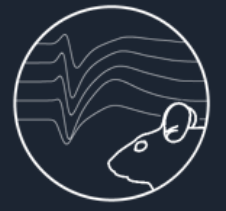

The Allen Institute is dedicated to accelerating the understanding of how the human brain works in health and disease. A robust quality control system that is transparent is integral to the success of these projects. The quality control system is currently supported by several code repos and databases.
LIMS: database storage for raw and processed data | brain_observatory_qc: qc metric development space | mindscope_qc_metrics: production environment for derived qc metrics | QC SYS mongo database: qc metric storage, qc report buidling | QC SYS repo: qc report display

Brain Observatory Quality Control Ecosystem
The Allen Brain Observatory presents the first standardized in vivo surveys of physiological activity in the mouse visual cortex. A robust quality control system is integral to the success of these projects. Additionally we believe that transparency into this process not only builds trust within the broader scientific community but facilitates growth of the entire field by promoting discussion and providing open source tools for all to utilize.
The quality control system is currently supported by several code repos and databases. The ecosystem is divided roughly as such:
- Raw & processed data storage
- QC metric computation
- QC metric storage
- QC report building and infrastructure
- QC report display human feedback

Raw & Processed Data Storage
description of LIMS here
QC Metric Computation
description of brain_observatory_qc & mindscope_qc_metrics here
QC Metric Storage
description of the mongodb logs here
QC Report Building
description of mongodb reports here
QC Report Display
description of mouseseeks repo here